São 12 os Países da América do Sul: Argentina, Bolívia, Brasil, Chile, Colômbia, Equador, Guiana, França (Guiana Francesa) A Guiana Francesa é um território ultramarino da França e não um país, Paraguai, Peru, Suriname, Uruguai e Venezuela.
| Nome | Bandeira | História, popularização e área |
|---|---|---|
| Argentina | 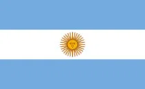 |
A História, popularização e área. |
| Bolívia | 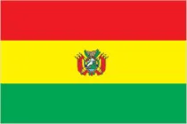 |
A História, popularização e área. |
| Brasil | 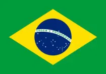 |
A História, popularização e área. |
| Chile | 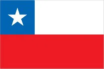 |
A História, popularização e área. |
| Colombia | 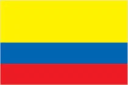 |
A História, popularização e área. |
| Equador | 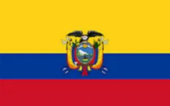 |
A História, popularização e área. |
| Guiana | 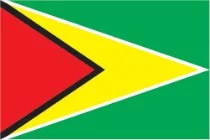 |
A História, popularização e área. |
| Guiana Francesa | 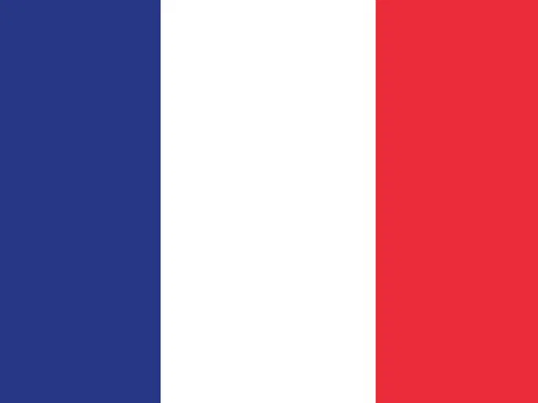 |
A História, popularização e área. |
| Paraguai | 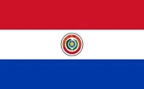 |
A História, popularização e área. |
| Peru | 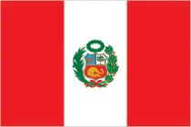 |
A História, popularização e área. |
| Suriname | 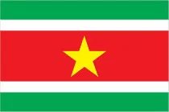 |
A História, popularização e área. |
| Uruguai | 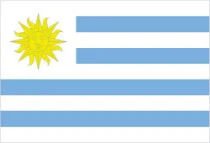 |
A História, popularização e área. |
| Venezuela | 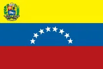 |
A História, popularização e área. |
| Video Sobre A América do Sul: | Clique Aqui Para Assistir | |